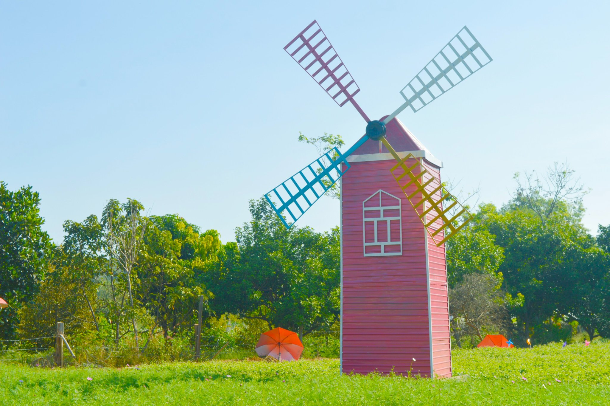
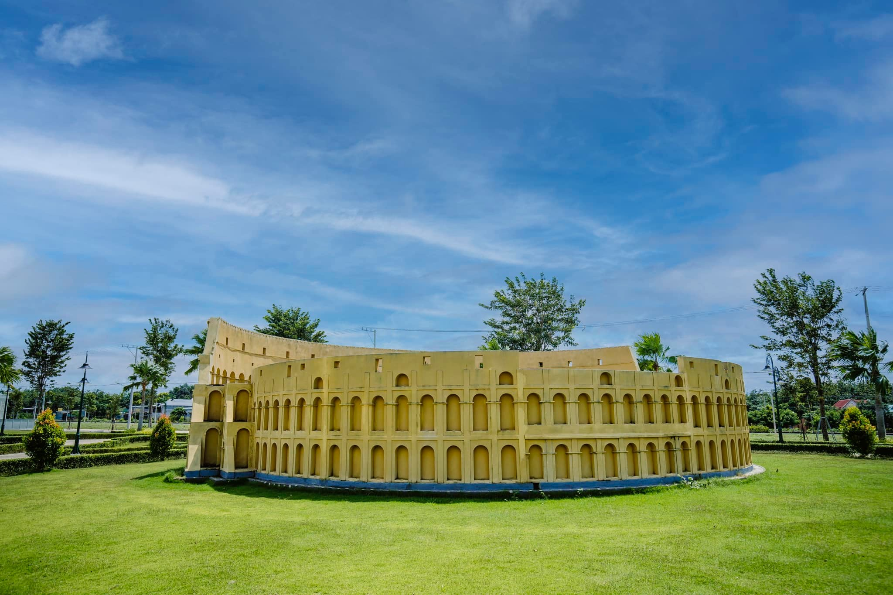
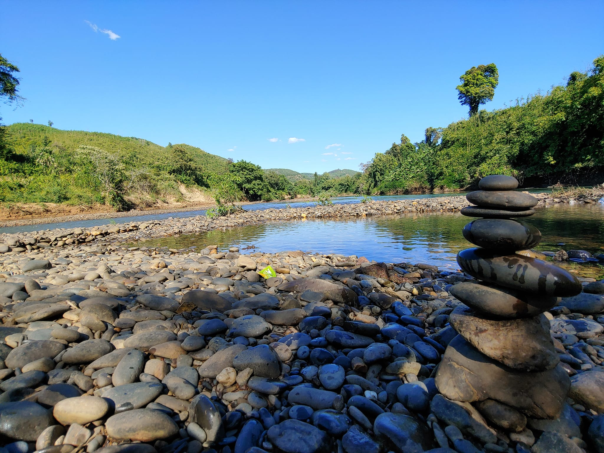

----- Nội dung -----
Thung lũng hoa - cối xay gió

TẠI THÔN BÙ XIẾT, XÃ LONG GIANG, THỊ XÃ PHƯỚC LONG
Đường đi: qua Cây cầu suối dung (hướng phường Long Thủy – Sơn Giang)
nhìn phía bên tay phải có con đường nhựa đi thẳng vào thôn Bù Xiết khoảng 200m rồi tiếp qua đoạn
ngã ba 3m nữa,
phía bên tay phải sẽ có con đường đất, sỏi đá xuống sâu 50m nữa là tới.
Công viên The Destina

Công viên The Destina - Khu 92ha Tiến Hưng.
Là một quần thể công trình di sản kiến trúc trên thế giới, mỗi công trình
kiến trúc là biểu trưng cho một nền văn hóa gắn liền với lịch sử của các nước phương Tây. Tháp
đồng hồ Big Ben, Khải Hoàn Môn, Nhà Thờ Đức Bà Paris, hay đài phun nước Apollo trong
cung điện Versailles tráng lệ, Quảng Trường Thời Đại, Nhà Trắng,… 😍😍
Hồ tên Đồng Nai ở Bình Phước

Nằm ở xã Đồng Nai, Bù Đăng Bình Phước.
Phải nói là một nơi rất đẹp,...
Trên fanpage link #reveiw Bình Phước